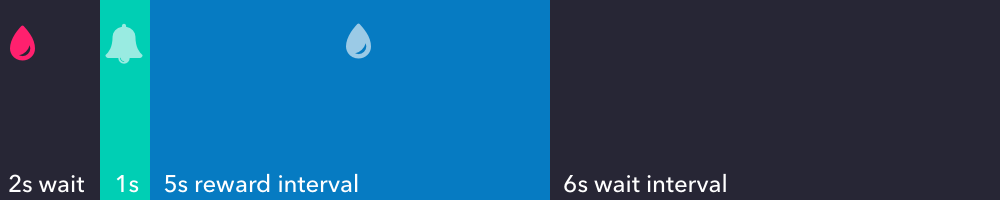
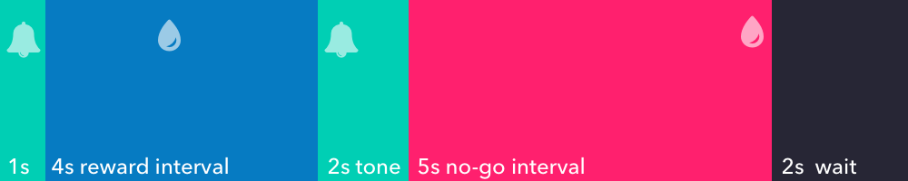
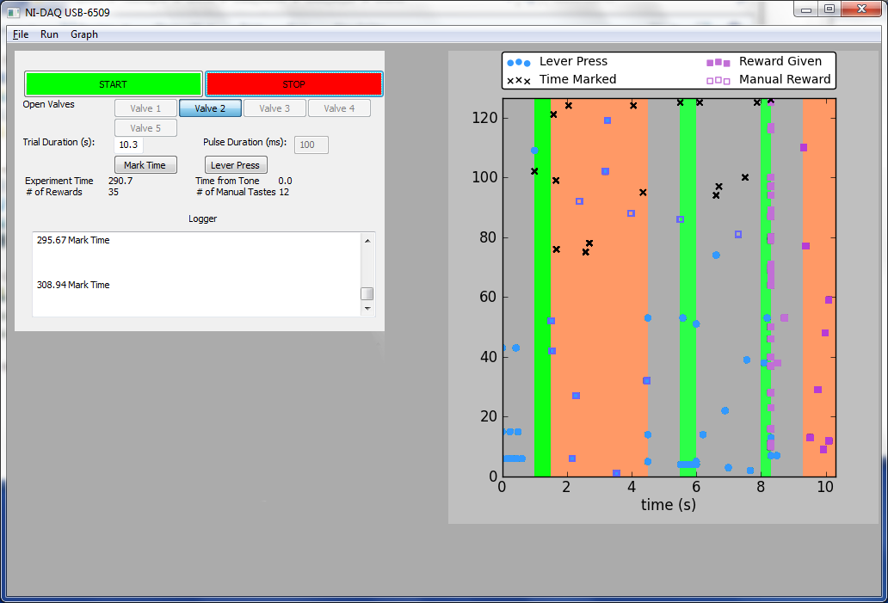
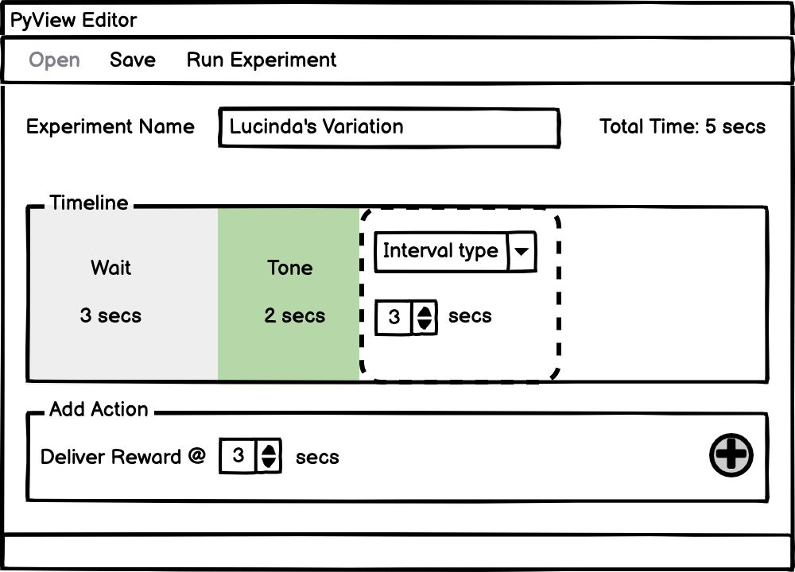
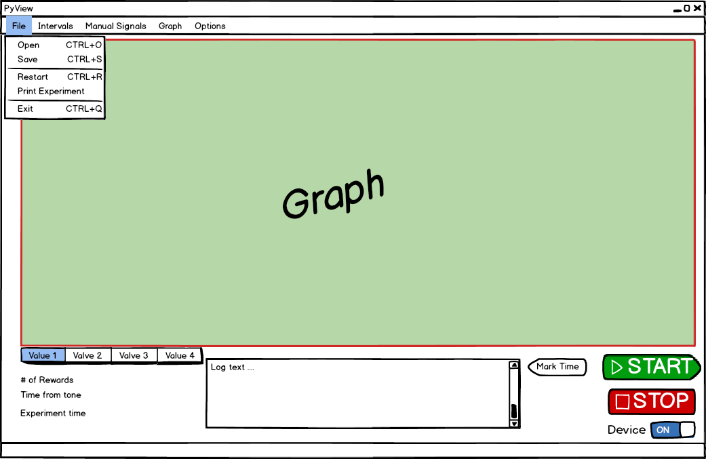
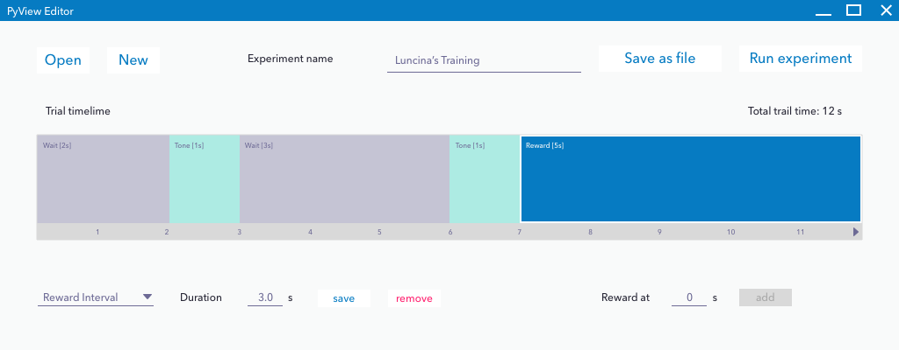
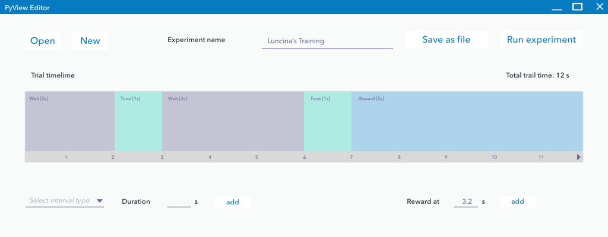
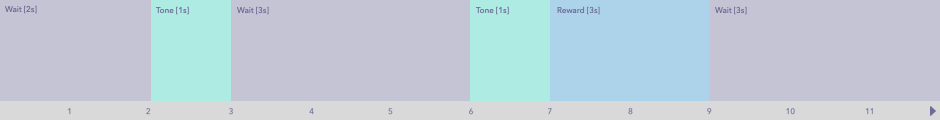

Experiment Control Creator
Empowering scientist to create hardware controlled experiments
@ Stony Brook University' s Neuroscience Dept. 2012
Once upon a summer
a professor and a post-doc wanted to find out which neurons fire upons in your brain when you are expectating a reward.
The classic experiment is to give the rat a drop of water at the start of a trial. Play tone. During the reward interval, if the rat presses the lever, she'll get another drop of water.
There's a bunch of ways users want to vary the experiment.
Inherited Program
Since the actions and intervals controlling the hardware was hard coded, the code hand to change everytime experiment designs changed.
It was not sustainable!
How about we make an experiment creator?
An experiment design is just a sequence of events, over a time period. They can be broken down into intervals (wait, tone, reward, no-go) and actions (deliver treat).
|  |  |

and three weeks later...
Experiment Editor
Intervals can be added, edited, and deleted.
and set times to dispense rewards freely

User testing, bug fixing, and soldering...
The editor built didn't provide affordance to re-arrange intervals.
And also included a new field in the tone interval to allow for the tone to be played in different frequencies.Wait?! What if you want to loop or jump intervals?
With the experiment editor, Lucinda was able to run and accumulate data faster than before. She got around to thinking of new variations, that she'll like to try:
- What if when the rat fails to wait for reward, we play tone again instead of restarting the trial?
- What if I gave the rats different types of water depending on how soon they press the lever?
- What if I want to do the tone & reward intervals over and over again until the subject gets it right?
Our linear experiment editor doesn't support that (T.T)
Enter the graph editor
- When to play tone (and its frequency)
- When to make the rat wait
- When to deliver reward
- Save experiment logic and run trials any time
On to greater evils...
Afterwards the stipend of the position ended, they were able to save money for their project, by not needing to hire another programmer.
What I didn't know back then
- Version control
- Design thinking